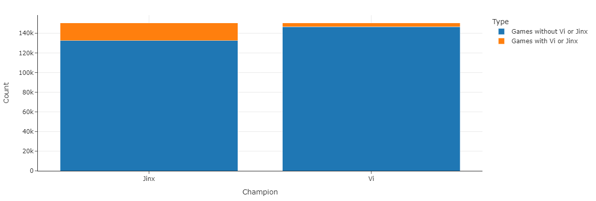
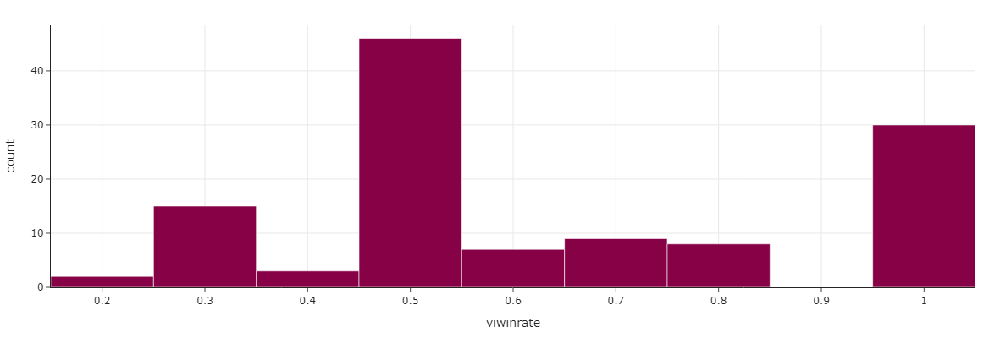
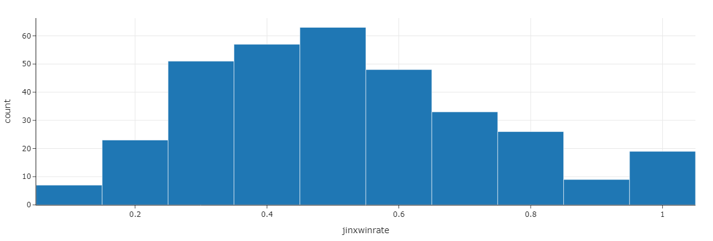
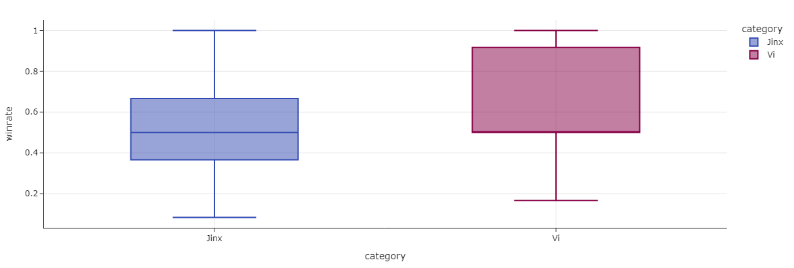

An Arcane-inspired investigation into League of Legends
Authors: Ryan Wei and Eric Teng
Introduction
Equipped with nearly a semester’s worth of practical data science tools, we set out to answer some pressing questions about the polarizing sisters of the hit show Arcane, Vi and Jinx, specifically in the context of the game itself, League of Legends. A fascinating game both in strategy and its psychological and global impact on the human race, League of Legends is a deeply complex game with many moving parts. Each game involves 2 teams, 5 characters a side, who compete on a map to capture certain objectives. At the end, a winner is declared. There are currently more than 140 different characters to choose from, each one carrying its own distinct strengths and weaknesses. Players are often forced to ask themselves: what characters are currently the best? What character will maximize my chance to win?
We decided to focus on Vi and Jinx in particular, comparing their win rates and answer the question: How likely is a team to win if they have Vi or Jinx on their side? To accomplish this, the project utilizes Oracle Elixir’s extensive 2024 League of Legends datasets equipped with 150588 rows and 161 different data points.
Data Cleaning and Exploratory Data Analysis
A lot of data cleaning was needed. There were multiple columns and rows that had NA values that needed to be cleaned in order to ensure best results. We first checked how many games had NA values in the character selections to see how many fully valid games were available. In the end, the massive amount of data was compressed to just 20378 games with all 5 character selections intact. [todo - how were columns cleaned?]
Univariate Analysis
Next, the data was filtered for Vi and Jinx games in particular. The original non filtered dataframe was used, meaning that games with NAN values were included. This may have affected the data, but the we thought the effect wasn’t too big. The more important aspect was seeing how prevalent the use of Jinx and Vi were. We first copied the original DataFrame, changing every entry in the character selection columns to NAN if they were not Jinx or Vi. Then, all rows with all NAN values in the character selection columns were dropped. The resulting DataFrame was one-hot encoded to yield a 3 column DataFrame, a boolean denoting the presence of Jinx in a game, a boolean for Vi, and the result. We were left with 3861 games, with 512 Vi only games, 3292 Jinx only games, 236 Vi wins, and 1644 Jinx wins. Finally, these datapoints were used to create the following graph. Clearly, Jinx was the more popular character.
 Figure 1: Side-by-side bar graphs of games with Vi and games with Jinx in comparison to total games
Next, we checked the win rate across different esports teams when playing Jinx and Vi. Again, the games without Jinx and Vi were filtered out. Then, the resulting dataframe was grouped by teamname, with the number of rows that each team played Jinx and the number of rows where each team played Jinx and won extracted out. The following histograms display the number of teams that had a win rate in some range when playing Jinx. For Vi, the data looked a little different. In general, there were many more games with Jinx in it. Jinx was a more popular and preferred choice for esports teams.
 Figure 2: Distribution of win rates across different esports teams when playing Vi
 Figure 3: Distribution of win rates across different esports teams when playing Jinx
Bivariate Data
To compare the two distributions of win rates, the plots were overlaid next to each other through the use of box plots. Jinx has a lower median win rate, as well as a lower minimum win rate. Vi has seen more success in competition, although this could be caused by the lower pick rate. Only teams with a particular specialist advantage with Vi would likely pick her.
 Figure 4: Side-by-side box plots of win rate distributions for Vi vs for Jinx
Interesting Aggregates
| Result | Jinx | Vi |
|---|---|---|
| Loss (0) | 1675 | 303 |
| Win (1) | 1674 | 266 |
To put the counts of wins for teams with Vi and Jinx into an easy-to-read table, we created a pivot table to show the win frequencies. There seems to be an equal amount of wins and losses for teams with Jinx, while for teams with Vi there are actually more losses than wins.
Prediction Problem
Since the distribution of win rates varired widely, an interesting research question was whether the result of a game containing Jinx and Vi as chosen characters could be predicted. This is a binary classification problem, since the model must know from the chosen columns whether the team with Jinx or Vi will win or not, simply 1 or 0.
Multiple evaluations were calculated such as the MSE, F-1 score, and overall accuracy of the model. Our model is optimized based on the F-1 score. Since predictions of the outcome of a League of Legends game is most useful near the beginning, the columns that were selected primarily contained statistics of the early stages of the game. For example, the model uses multiple metrics that were taken 10 minutes into the game. The average League of Legends game is 25 - 35 minutes with pro matches sometimes lasting longer.
Baseline Model
The statistics chosen were: “csdiffat10”, “killsat10”, and “deathsat10”. “csdiffat10” denotes the difference in creep score between teams, a quantiative feature measuring the difference in the amount of minions killed by both teams. Higher creep scores genereally means more efficient gathering of reources. “killsat10” denotes the amount of kills the team has obtained against the opposing team’s characters. Similarly, “deathsat10” is a measure of how many deaths the team has suffered. These were all clear indications of success for teams: csdiff showed the difference in resources that teams managed to gather, while kills and deaths were indications of a team’s dueling abilities and who could get more key kills that would turn the tide of the game in one team’s favor.
The first step was to create the model pipeline. The character pick columns were one hot encoded to indicate the presence of Jinx or Vi. The three other features were added as passthrough features. After preprocessing, the data was run through Logistic Regression with a threshold of 0.5. Results are displayed below.
| Evaluation Metric | Value |
|---|---|
| MSE | 0.405 |
| F1-Score | 0.596 |
| Accuracy | 0.595 |
Table 1: Results of the initial model
Final Model
Although the results were not terrible, they could be better. Once again, the character picks were one-hot encoded. Next, Polynomial Features were added to increase the complexity of the model for the 3 10-minute features. We did this to see whether there was a non-linear relationship between these statistics and the win/loss of the game. The features were scaled to prevent large coefficients before being put through Logistic Regression again. A grid search of the optimal degree for the polynomial features and C value of Logistic Regression, or the strength of Regularization. The Grid Search included a cross validation of 5 iterations. Again, a threshold of .5 was used. The results are displayed below.
| Evaluation Metric | Value |
|---|---|
| MSE | 0.405 |
| F1-Score | 0.600 |
| Accuracy | 0.594 |
Table 2: Results of the final model (Logistic Regression)
The ideal paramaters were 2 for the polynomial degree and 1 for C or the regularization strength. The Logistic Regression penalty used was “l2” and the solver was scikit-learn’s “lbgfs”. \Unfortunately, the results didn’t improve much, except for the F1 score which the model was specifically optimized for, increasing by .05.
We decided to try the Random Forest Classifier as well, grid searching over the polynomial features degree as well as the number of random forest classifier trees. We did this because we had a lot of data and Random Forest Classifiers perform better with large datasets, but this model performed worse. The best paramaters were a degree of 2 for the polynomial and 300 trees.
| Evaluation Metric | Value |
|---|---|
| MSE | 0.415 |
| F1-Score | 0.587 |
| Accuracy | 0.585 |
Table 3: Results of the final model (Random Forest Classifier)
Although not traditionally used for classification problems, we also attempted to use a Linear Regression just to see how it would compare. Surprisingly, the Linear Regression did better than expected. The original final model was fed into a Linear Regression to yield the following results:
| Evaluation Metric | Value |
|---|---|
| MSE | 0.235 |
| F1-Score | 0.606 |
| Accuracy | 0.598 |
Table 4: Results of the final model (Linear Regression)
Weirdly, the Linear Regression worked the best. The best paramater for the polynomial was simply 2. Although difficult to pinpoint the exact reason, we hypothesized that maybe the relationship between early-game statistics and the result was more linear than we speculated. Or, the classification models could have been overfitting.
Because the Logistic Regression Model with PolyFeatures performed better than Random Forest, and because Linear Regression likely is only better by coincidence, we choose the Logistic Regression Model with PolyFeatures as our final model.
Conclusion
With more late-game statistics, the model likely would have been more accurate, but less useful. Additionally, due to the intentional balancing of League of Legends games, it is likely expected that Vi and Jinx do not have a huge impact which makes the models effort to predict the outcome of the game compromised. There are very little Vi and Jinx games compared to the total number of games as well. With even more data, perhaps the model could do better. Another way to improve the model is to incorporate statistics that are available further into a match. However, although more accurate, this is clearly less practical and useful. It would, however, allow for a continued progression of odds across the game, similar to Google’s updating odds on sports games.
Overall, although the model performance was not as good as we hoped it could be, League of Legends is an incredibly complex game and the results are still impressive. GLORY TO LEAGUE OF LEGENDS!!!!!!